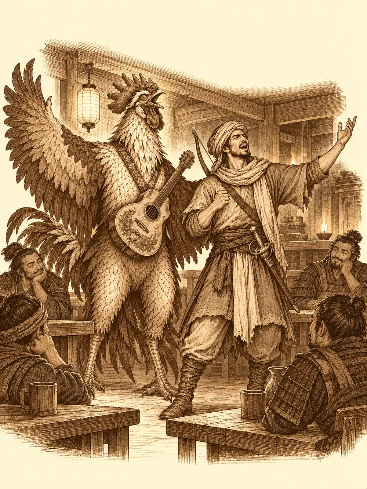

Capítulo 71
Wakare no Yama
Libro V · Los guardianes del Norte y del Sur
La biblioteca de Sho olía a papel húmedo y a polvo de siglos. Katari había vuelto tantas veces aquellos días que el librero ya no se levantaba al verla entrar; solo le señalaba con la barbilla los montones que aún no había revisado. Buscaba dos cosas. La primera, todo lo que hubiera sobre el dios del asesinato que había visto en el sueño de Sirth. No encontró nada. Los papeles sobre dioses estaban revueltos con todo lo demás, sin orden, y cada vez que creía tener algo se le deshacía entre las manos.
La otra cosa era el Fénix. Eso sí apareció. Se llamaba Suzaku, era uno de los guardianes de Kuroto y su elemento era el fuego. Había dibujos: un volcán y, encima, un ave de llamas con las alas abiertas. Y había un mapa de las montañas del sur con varios puntos marcados a mano, lugares donde podía estar su templo. Ninguno seguro. Varios posibles.
Había intentado también hablar con Kogan Dragon. Llamó al espíritu que tenía la forma del protector y lo mandó a buscarlo, a preguntarle por el Fénix. El espíritu no encontró a nadie. El dragón no estaba en aquel plano.
"Si encuentra algo sobre ese dios", le pidió al librero antes de irse, "guárdemelo, por favor. Se lo pago el doble".
"Lo haré. Pero mire en los templos. Ahí saben más de dioses que yo".
Shigeru estaba furioso desde el sueño de Aka. Había intentado proteger a una niña y le habían pagado intentando matarlo, y casi lo habían conseguido. Encima no le salía ningún trabajo, ninguna casa que reparar, ningún muro que levantar. Así que había ido buscando sitios donde desahogarse, y había acabado recorriendo las salas de entrenamiento de la capital, una detrás de otra, para pegarse con quien se dejara. Aquella mañana se pasó también por la herrería, se presentó, ofreció sus servicios y no consiguió ningún encargo. El herrero le dejó probar una espada. Shigeru la movió un rato en el aire y se la devolvió.
"Cuando gane unos dineros, le pediré que me haga una de estas".
Infinito, mientras tanto, cantaba. Salía todas las mañanas, preguntaba si había algo importante que hacer, y como no lo había, o no lo entendía, se iba a tocar por las calles. Invitaba a cervezas a quien lo escuchaba. La gente empezaba a conocerlo. De paso, preguntaba con mucho disimulo por un cerrajero de confianza, uno que no se fuera de la lengua; todos lo mandaban al de la esquina, que no era lo que buscaba. Aquella mañana vio un cartel en la puerta de un local vacío: Se alquila. Se quedó delante un buen rato, imaginándose su propio gallinero, hasta que se acordó de que tenían prisa y se fue corriendo a buscar a los demás por medio Sho.
Tenían una reunión con el shogun.
El castillo estaba en lo alto, con su prado y sus cerezos. Los guardias de la puerta los conocían y los acompañaron dentro. El shogun estaba con Rua, sus consejeros y su guardia.
Infinito se puso delante, porque Katari tenía un juicio pendiente y prefería pasar desapercibida, y empezó a cantar. El shogun se quedó encantado. Hasta los guardias movían la cabeza al ritmo. Le tiró cinco monedas de oro e Infinito las atrapó al vuelo con el pico.
"Me encanta este pollo. Rua, tenemos que invitarlo a dar un concierto. Haremos un festival y será el invitado especial".
"Me encantaría", dijo Infinito. "Quería comprar una casa y no tengo dinero".
Pero el shogun tenía trabajo para ellos. Había que llevar provisiones y herramientas al campamento del sur, el que estaban levantando para cerrar el paso de las montañas a los yokai. Iba a mandar a Aka, pero había tenido que enviarla a otro sitio. No era mucho peso: utensilios para el campamento, algo de raciones. Les prestaría caballos. Y les pagaría.
Shigeru tocó el suelo con la frente.
"Le agradezco la oferta. Pero en mi caso preferiría que mandara ayuda a mi aldea. A Miyamoto. Nos atacaron unos yokai y todavía no he podido mandarles nada".
El shogun se volvió hacia sus consejeros.
"Apuntadlo. Miraremos lo de esa aldea".
Y luego volvió a lo suyo: el campamento era lo importante, explicó, porque si conseguían controlar que los yokai del sur no cruzaran las montañas, no volvería a pasar lo que le había pasado a la aldea de aquel muchacho.
A la salida los esperaban unos carros con samuráis. Uno de ellos iba hacia Miyamoto. Hicieron el primer tramo con la comitiva, durmieron una noche en un campamento improvisado junto al camino y, en el cruce que les había indicado el shogun, se separaron y bajaron hacia el sur.
Caminaron doce horas. Por el camino se oían criaturas extrañas entre la maleza; no se acercaban, pero se oían. Anochecía cuando vieron unas sombras a lo lejos, no muy lejos del camino. Eran carros. Estaban volcados.
Se acercaron con cuidado. Había cajas y cofres abiertos por el suelo, provisiones desparramadas, y cuerpos: campesinos y algún samurái con la armadura del shogun. Detrás de uno de los carros alguien murmuraba y resoplaba.
"Malditos estúpidos. Se han cargado la carreta. Podían haberla saqueado sin romperla".
El carro se movió un poco, como si alguien intentara levantarlo. Katari se preparó para lanzarle una orden. Infinito se adelantó con las alas en alto.
"Venimos en son de paz. ¿Qué está pasando aquí?".
Detrás del carro había un hombre. Era humano, llevaba un turbante en la cabeza, un estoque a un lado y un arco a la espalda. Soltó la carreta, que cayó al suelo con estrépito.
"Yo era parte de la comitiva. Era uno de los conductores. Habíamos parado a hacer noche. Salí un momento y, cuando volví, me encontré esto. Vi unas sombras. Sombras con unos brazos muy largos. No pude ver mucho más".

Le ofrecieron ayuda. Ellos llevaban caballos y él tenía un carro; podían ayudarse. El hombre aceptó encantado: al menos, con la bronca que le iba a caer, entregaría un carro, aunque estuviera casi vacío.
Mientras los demás enganchaban los caballos, Katari se agachó junto a los matorrales. Había huellas. Recientes. Eran de pies humanos, pero a su lado había surcos, como si quien las había dejado arrastrara los brazos por el suelo al caminar. En la madera del carro encontró arañazos: cinco, paralelos, de unas uñas enormes.
Recogieron lo que se podía salvar. Algunas cajas de herramientas, algo de comida. Infinito se ocupaba de los caballos, que estaban nerviosos.
Entonces se movieron los matorrales.
Las criaturas salieron de entre las ramas chillando. Eran humanoides de brazos larguísimos, tan largos que les llegaban al suelo, y golpeaban desde lejos. Una se lanzó sobre Katari, y Shigeru echó a correr para meterse entre las dos y apartarla a golpes. Infinito sujetó a los caballos para que no salieran desbocados con el carro.
El conductor resultó útil. Disparaba desde el carro con un arco que tenía algo de magia, y cuando una criatura se descuidaba se le metía por el flanco con el estoque. Infinito le contó a una algo tan gracioso que se cayó al suelo retorciéndose. Katari dejó a otra paralizada. Pero las demás golpeaban, y cada zarpazo hacía algo más que herir: les dolía por dentro de la cabeza y, al apartar la garra, faltaban monedas en la bolsa. Cuatro aquí, cinco allá. Buscaban a quien llevara más oro.
Infinito se volvió invisible para que dejaran de perseguirlo y siguió cantando desde donde nadie lo veía. Shigeru aprendió algo nuevo aquella noche, un modo de devolver los golpes en el mismo instante en que los recibía, y se plantó delante de todos para usarlo. Una de las criaturas se metió en la boca las monedas que había robado y se las tragó, y su piel se volvió más dura.
Katari curaba y combatía a la vez. En una de esas lanzó algo que alcanzó a todo lo que había alrededor de una criatura, y uno de los caballos acabó con la pata ensangrentada. La criatura que tenía delante reventó, y a Katari le dejó la cara roja de sangre de arriba abajo.
La pelea fue larga. Al final Infinito consiguió dormir a una de las criaturas con una canción, y Shigeru acabó con la última que seguía en pie.
Ataron a la dormida. Se la llevarían como prueba. Registraron a las muertas y recuperaron parte de lo que les habían quitado; las monedas que le habían robado a Katari se las quedó Shigeru, porque ella se lo dijo.
Luego, sin que nadie lo propusiera en voz alta, cargaron también a los muertos. Los samuráis, los campesinos. Tendrían familia, dijo alguien. Merecían volver. El caballo herido cojeaba, y Shigeru lo soltó del tiro para que no tuviera que arrastrar el carro. El otro tiraría solo.
Estaban mucho más cerca del campamento que de Sho. Siguieron hacia el sur.
El campamento había crecido. Tenía una carpa enorme que hacía de taberna, tiendas pequeñas donde dormían los soldados, un herrero reparando armaduras, la tienda de un alquimista y un lugar sagrado donde los samuráis iban a encomendarse antes de las expediciones. Al fondo, tres carpas grandes con los estandartes de los generales.
Uno de ellos los recibió. Se presentó como Kutuma, uno de los generales de mayor rango. Estaban haciendo expediciones, les dijo, buscando un templo en las montañas. Y estaban encontrando cosas extrañas.
"Algunos soldados dicen que han visto una puerta. Una puerta enorme, que bloquea un paso de las montañas. Dicen que mide unos trescientos metros de alto".
Le entregaron las provisiones. Le contaron lo de la caravana, le enseñaron los cuerpos. Y le dijeron que traían a una de las criaturas viva, atada en el carro, por si les servía para algo.
Kutuma los miró como si se hubieran vuelto locos.
"No pienso meter esa criatura en mi campamento. Si queréis interrogarla, hacedlo fuera. Pero aquí dentro no la quiero".
Alguien propuso empalarla viva delante del campamento para que sirviera de aviso a los demás yokai y de ánimo a los soldados. Kutuma dijo que la mayoría de lo que bajaba de aquellas montañas eran demonios, que se mataban entre ellos sin que nadie se lo pidiera, y que no le parecía buen plan tener allí un yokai que se pudiera escapar. Les dio permiso para descansar y se volvió a sus preparativos.
Se quedaron mirándose. El conductor no entendía nada.
"¿Esto es lo que hacéis los cazadores? ¿Primero lo cazáis y luego no lo queréis?".
Katari no dijo nada. Fue hasta el carro, conjuró una criatura enorme y la criatura se tragó al yokai de un bocado. Asunto resuelto.
"Os acabo de conocer", dijo el conductor. "Y ya veo que estáis todos pirados".
Era noche cerrada. Volver a Sho para cobrar podía esperar al día siguiente. Entraron en la carpa de la taberna.
Detrás de la barra había una mediana fuerte, curtida, con los brazos como troncos, que les sirvió y les advirtió que allí cada uno iba a buscar lo suyo, que ella no servía en las mesas. La mayoría de los clientes eran soldados, agotados, bebiendo casi sin hablar. Infinito los miró y se le iluminaron los ojos.
Empezó a cantar. Era una canción nueva, sobre un carro, un carro que le habían robado a un pobre conductor en mitad del camino. Al segundo estribillo el conductor, que ya llevaba una cerveza encima, se le unió a pleno pulmón.
Shigeru los miraba desde una mesa. Katari, sentada a su lado, cerró los ojos y se apoyó en el respaldo con cara de estar pensando que aquel gallo nunca dejaba de cantar.